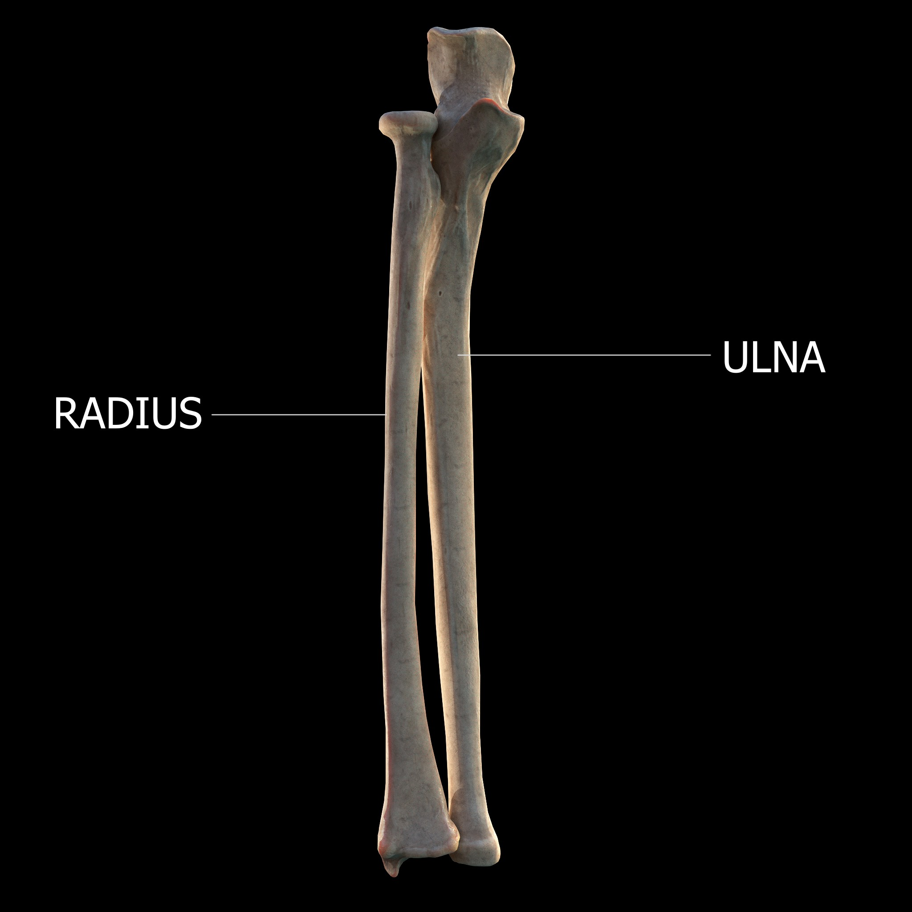

Introduction
In this lesson I'll discuss some hand gestures known as flexion, extension, ulnar and radial deviation of the wrist. Understanding these concepts will help you reduce excess effort, and improve your ability to perform more demanding passages while reducing the risk of injury. Having said this, if you want to dive deeper into the anatomical aspects of the wrist, I'd recommend asking a physiotherapist or relevant health professional.
When describing the gestures, I will do so from the perspective of a pianist sitting at the piano, so the higher register would be at the right, and the lower register at the left (fig. 1).

Please note that the anatomy of each person is different, and not two hands are the same. The advice of which movement to use for a given scenario may differ from person to person, even when referring to the same passage and fingering.
Flexion and extension
Flexion is the anatomical action of bending or decreasing the angle between two body parts. Extension is increasing the angle between two body parts. For example, when you close your hand to make a fist, you are "flexing" the fingers towards the palm (fig. 2). When you open your hand and straighten your fingers, you are "extending" your fingers away from your palm (fig. 3).


Flexion and extension of the wrist refer to reducing or increasing the angle between the palm of the hand and the forearm. Whenever you bend the palm of your hand up or down (assuming your palm and forearm are parallel to the floor) we are talking about flexion and extension of the wrist (figs. 4 and 5).


Ulnar and radial deviation
Ulnar and radial deviation involves bending the wrist laterally, left or right (again assuming your palm and forearm are parallel to the floor). Ulnar deviation means bending the wrist to the side of the little finger, while radial deviation is bending the wrist to the side of the thumb (figs. 6 and 7).


Ulna and radius bones
The terms "ulnar" and "radial" are associated with the bones in the forearm, the ulna and the radius, to where each movement is directed (fig. 8).

By DrJanaOfficial — Own work, CC BY-SA 4.0, Wikimedia Commons
Neutral position
When there is no flexion, extension, ulnar or radial deviation, we refer to this position as "neutral". In the neutral position, the wrist is not bent in any direction, and there is a straight (or almost straight line) running from the forearm through the wrist, to the hand and the third finger (fig. 9). We can consider the third finger as a point of reference for the "middle" of the hand.

This is generally considered the safest and most comfortable resting position for the wrist, reducing the risk of repetitive strain injuries that can occur from maintaining the wrist in flexed, extended, or deviated positions for long periods of time.
The voluntary exertion of any of the movements we described (flexion, extension, ulnar and radial deviation) will require the activation of different muscle groups in order to move the wrist away from a neutral position. This should not be confused with the wrist being bent as a consequence of gravity, in which case the movement is not caused by the action of the muscles.
Wrist deviation at the piano

At the piano, radial deviation is particularly common, especially during passages that involve the thumb crossing under the palm, or when the fingers cross over the thumb (as it happens during scale playing, fig. 10). This movement helps to reduce the need for extreme thumb flexion.
Ulnar and radial deviation are more pronounced whenever the hands need to move to an unusual register other than the one naturally available in a neutral position. For the left hand, radial deviation is increased when the hand reaches to the far end of the lower register of the piano (to the left, fig. 11), and ulnar deviation when the hand goes beyond the center to a higher register of the piano (to the right, fig. 12).


With the right hand, the opposite is true: radial deviation is more prominent when reaching to the far end of the higher register (to the right, fig. 13), and ulnar deviation when the hand moves beyond the center towards the lower register of the piano (to the left, fig. 14).


Both gestures require an effort which is more strenuous than keeping the hand aligned with the wrist. Recognizing when this happens is crucial to adjust technique and reduce any unnecessary stress imposed to our anatomy.
For example, when the hand reaches the far end of the piano, we can adjust our fingering in favor of the thumb, index, and middle finger, reducing radial deviation when compared to using the fourth and fifth fingers. This means our fingers would be at an angle in relation to the keys, but closer to a neutral position in relation to the wrist (fig. 15).
A real life example
Now let's discuss a real-life occurrence of ulnar and radial deviation. In Chopin Étude Op. 25 Nr. 3, you'll notice through the score an emphasis on using the third finger repeatedly in both hands (fig. 16). I highly encourage you to try this example yourself (you don't need to play at speed if you are not ready for it yet).
.png)
In both hands the third finger is strategically placed at the middle of the group of notes involved in the passage. The result is the third finger acting as an axis from where the hand bends to reach the notes either up or down in the note group (or left and right at the piano).
You can see an extreme example at the beginning of the second measure in the left hand, where there is a minor seventh interval between C3 and B♭3, played by the third finger and the thumb. It is not possible to play this without ulnar deviation (fig. 17).
.png)
Later on, the left hand needs to twist to reach the lower F2. Since the C3 played by the third finger is repeated multiple times it is convenient to leave it in place and not move it. In this case the resulting movement is radial deviation (fig. 18).
.png)
Without any additional context, it is not clear whether Chopin devised this intentionally or is it a mere consequence of the fingering suggested in the score. Furthermore, it is not guaranteed that this fingering was written by Chopin himself, or added later by the sheet music editorial. Whatever the case, since this pattern is repeated all throughout the score, and the intent of the piece is technical in nature (even though the Études are highly regarded as artistic pieces in their own right) it is safe to assume that one of the purposes of the piece is to consciously practice these movements.
Closing thoughts
Having a proper understanding of the anatomical movements of the wrist, it is possible to describe with precision how and when these movements happen during a passage. We can then analyze how fingering affects movement, and whether a specific fingering mitigates or exacerbates a particular gesture. From then on, we can make adjustments aiming for fluidity of movement and reduction of effort.
As you practice, if you pay attention to these aspects of technique, you'll start realizing what changes can be made to reduce tension. Don't be shy about discussing your observations with your piano instructor, and seek advice from a physiotherapist if you find there are movements which cause too much tension or discomfort. I highly recommend analyzing video recordings of piano performances where you can see the hands. By analyzing the movements of other pianists and comparing them to your own, you may gain precious insights.
It is worth noting that it isn't always the case that specific types of movements should always be avoided. As we've seen in the example of thumb crossing, some radial deviation would be preferred to extreme thumb flexion. Some people may feel more comfortable performing certain types of movements than others. An exaggerated gesture can be justified, provided it is not repeated consecutively and contributes to the overall fluidity of movement. We always need to assess trade-offs, mitigation strategies, and conveniences when adjusting technique. You'll have to apply your own judgment to decide whether some change is necessary in your own playing. Equipped with this knowledge, I hope you will be able to do so.